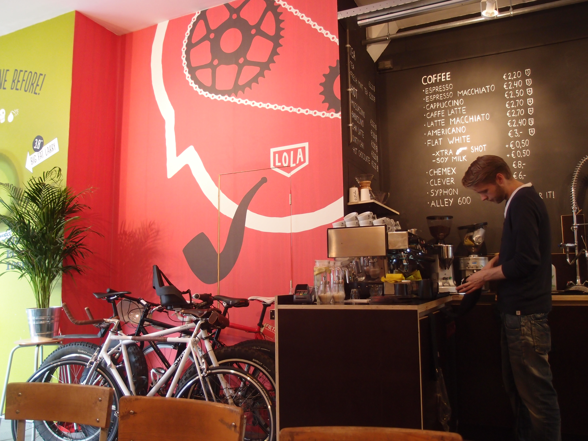
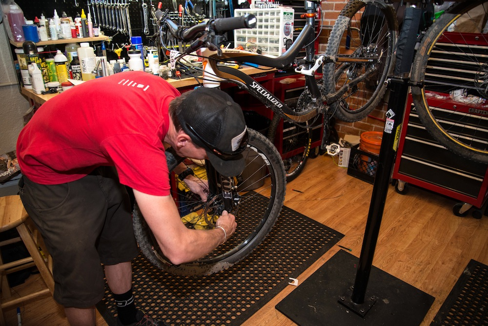
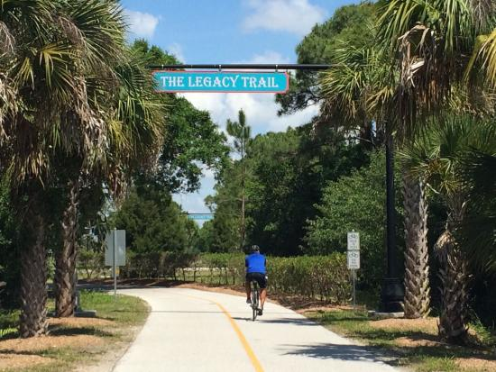

Scooter's Trail Stop
Concept
Scooter's Trail Stop is patterned after the european model of cyclo-café. Where both a bike shop and café exist in one location. There are now a few examples of this in the US, like Naples Cyclery in Naples Florida .
Scooter's Trail Stop is different in that is connected to a 'Rail Trail'. Specifically, the Legacy Trail in Venice Florida. This makes Scooter's Trail Stop convenient for users of the rail trail to partronize Scooter's Trail Stop both from the street access or from the trail by bike, running or walking. This will make Scooter's Trail Stop only bike shop and/or café in Sarasota County to have a bike shop on a trail head.
Scooters Café
Scooter's Café serves custom blended 'French Pressed Coffee' along with ovo-vegetarian breakfast and lunch items. Why ovo-vegetarian? Scooter's believes that to be your best you must eat your best. Eggs are good food in moderation (2 eggs a day) will keep you body ready for your next adventure. A Vegan Diet will help keep your energy high and your weight down. Combine the two, "ovo-vegetarian".
French Pressed Coffee
A wait person will serve your choice of dark, medium, or regular coffee blends and press the coffee at the table. Leaving the coffee, so there is no need to ask for a refill. French Pressed coffee at coffee shop prices!
Scooter's Bike Shop
The bike shop is located within Scooter's Trail Stop . The bike shop is a full featured lbs without the box store feeling. Our bike shop offer all the styles and accessories you will need to go on your next adventures.
Scooter's Bike Shop Offers
- Bikes for Rent and for Sale
- Bike Service Department
- Running Shoes and Hiking Boots
- Bicycle, Running and Hiking Accessories
- Casual Bicycling, Running and Hiking Attire
- Friendly Sales and Service Staff
Scooter's Service Department
Scooter's Service Department will service your bike while you wait, ship your bike to anywhere in the US, or customize you bike to your riding style and needs. Custom builds, custom wheels, or adding your favorite component is available a Scooter's Service Department.
Legacy Trail
Scooter's Trail Stop is located right off the Legacy Trail in Nakomis, Florida. The legacy trail is a multi-use paved path approximately 10 miles long in Sarasota County. The Friends of the Legacy Trail's Website has more information about all the current and future plans to expand the legacy trail.